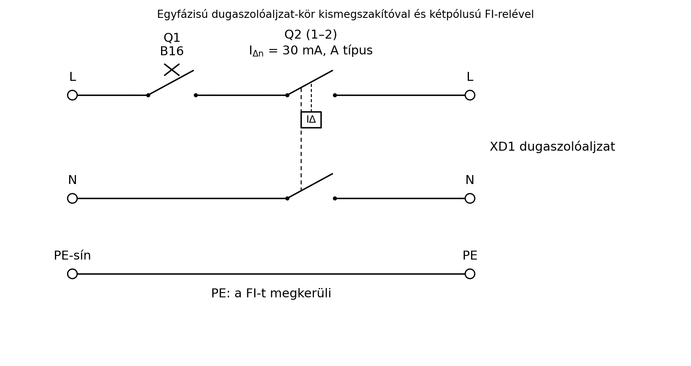

Egy lakásfelújításon a megrendelő azt kérdezi: „Miért kell ez az FI-relé a fürdőszobai mosógép elé? Nem elég a kismegszakító?” A válasz nem egyszerű: a kismegszakító túláram és zárlat ellen véd, de akkor is üzemel, ha például a fázisvezető sérülése miatt a mosógép fémházát megérintő személyen át áram folyik a föld felé. Ezt a hibát differenciaáram okozza, és erre való az áram-védőkapcsoló. Ebben az alfejezetben megismered a működését, a típusait, az alkalmazási szabályait, valamint azt, hogyan ellenőrizheted a próbagombbal és méréssel.
Képzelj el egy egyfázisú áramkört, amelyben egy fázisvezető (L) és egy nullavezető (N) viszi az áramot a fogyasztóhoz. Normál üzemben az L-en folyó áram ugyanakkora, mint az N-en visszafolyó áram, csak az irányuk ellentétes. Ha a készülék fémházát feszültség éri – például megsérül a szigetelés, és a fázisvezető hozzáér a fémházhoz –, akkor az áram egy része a védővezetőn (PE) vagy a testen, illetve az emberi testen keresztül folyik a föld felé. Ezáltal az L-ben folyó áram nagyobb lesz, mint az N-ben visszafolyó áram. A két áram közötti különbséget nevezzük differenciaáramnak, és ez az áram-védőkapcsoló jelzését szolgáltatja.
Az ábrán a fázisáram vektora a nullavezetőn visszatérő vektorából és a hibahelyen át a PE/föld felé folyó kis differenciaáramból () tevődik össze: . Ép áramkörben , a különbség nulla; hiba esetén a különbség jelenik meg a Σ-áramváltóban.
Definíció. Differenciaáram. Egy áramkörben a fázisvezetők és a nullavezető eredő áramának vektori összege:
Egészséges áramkörben ez az összeg nulla, mert a fázisokon folyó áramok a nullavezetőn visszafolynak, és a Kirchhoff csomóponti törvény értelmében a vektori összeg zérus. Ha bárhol hibaáram folyik a védővezető vagy a föld felé, ez az összeg nem nulla, és a különbség jelzi a hibát.
Definíció. Áram-védőkapcsoló (FI-relé, RCD). Olyan kapcsolókészülék, amely az áramkör differenciaáramát folyamatosan méri, és ha az meghaladja a beállított névleges hibaáramot (), az áramkört megszakítja.
A működés elve. Az FI-relé központi eleme a Σ-áramváltó (szumma áramváltó). Ez egy gyűrű alakú mágneses mag, amelyen a védendő áramkör összes fázis- és nullavezetője egyszer át van fűzve. A védővezeték (PE) nem megy át rajta, mert azon normál üzemben nem folyik áram. Ha a fázis és a nulla áramok vektori összege nulla, a magban a mágneses fluxus nulla, és a szekunder tekercsben nincs feszültség. Hiba esetén a differenciaáram a magban fluxust hoz létre, ami a szekunder tekercsben feszültséget indukál. Ez a feszültség a kioldórelét működteti, amely mechanikusan megnyitja az érintkezőket, és leválasztja az áramkört.
Az ábra bal oldalán ép áramkör látható: az L-en befolyó és az N-en visszafolyó 10,0 A fluxusa kioltja egymást. A jobb oldalon testzárlat van (az 1. feladat adataival): az L-en 10,2 A folyik, az N-en csak 10,0 A tér vissza, a 200 mA különbség eredő fluxust és a szekunder tekercsben feszültséget hoz létre, a kioldórelé bont. Alul a kioldási tartomány: (15 mA) alatt a FI nem oldhat ki, 15 és 30 mA között kioldhat, felett ki kell oldania. A HTML-kiadásban a hibaáram csúszkával állítható, és kipróbálható a hibás bekötés is: ha a FI után az N és a PE össze van kötve, a hibaáram egy része az N-en a Σ-magon át tér vissza, és a FI kisebb különbséget érzékel.
A készülék felépítése. Az elv mögött kevés, jól azonosítható alkatrész dolgozik. Az alábbi ábrán egy kétpólusú (fázis + N) FI-relé belseje és előlapja látható, a részek számozva: felül és alul az 1 kapcsok (1 = L be, 2 = L ki, valamint N be és N ki), a 2 főérintkezők a fázist és a nullát is bontják, a 3 szabadkioldású kapcsolózárat a 4 kioldórelé oldja ki. Az 5 Σ-áramváltó gyűrűmagján az L és az N egyszer van átfűzve, a 6 szekunder tekercs táplálja a kioldórelét. A 7 próbagomb (T) egy próbaellenálláson (R) át a kimenő oldali fázist a bemenő oldali nullával köti össze, így a próbaáram a magot csak az egyik vezetőn járja át – ez mesterséges differenciaáram. A 8 kapcsolókar és a 9 adattábla (névleges áram, , típusjel) az előlapon van.
Figyeld meg, hogy a PE nem megy át a készüléken, és hogy a próbagomb áramköre feszültséget igényel: ezért nem old ki a próbagomb kikapcsolt vagy törpefeszültségről táplált FI-n. Az adattábla értékei a rajzon csak példák; a valódi adatot mindig a készülékről olvasd le. A HTML-kiadásban a részekre mutatva megjelenik a nevük és a szerepük.
Fontos tulajdonság. Az FI-relé nem véd túláram vagy zárlat ellen, ezért mindig túláramvédelmi eszközzel (biztosítóval vagy kismegszakítóval) kell együtt alkalmazni. Vannak kombinált készülékek is: a kismegszakítóval egybeépített áram-védőkapcsoló (RCBO), amely mind a túláramot, mind a differenciaáramot kezeli.
Az FI-relék legfontosabb jellemzője a névleges hibaáram (). Ez az a differenciaáram-érték, amelynél a készülék megszakít. A gyakorlatban három érték a leggyakoribb:
30 mA: kiegészítő védelem, amely közvetlen érintés esetén is csökkenti a halálos áramütés kockázatát. Tanulási értékként kötelező: a laikusok által használt, legfeljebb 32 A-es dugaszolóaljzat-körök, a szabadban használt, legfeljebb 32 A-es hordozható készülékek köre, a lakások világítási végáramkörei és a különleges helyiségek (fürdőszoba stb.) körei (ellenőrizendő: MSZ HD 60364-4-41 és a 7-es részek aktuális kiadása). A lakossági végáramkörökben a 30 mA a leggyakoribb érték; egyedi készülékkörökre 10 mA-es kivitel is létezik.
100 mA: főként tűzvédelemre használják, ahol a kisebb hibákból származó tartós szivárgóáram melegedést és tüzet okozhat. Gyakran az elosztókban, nagyobb szakaszokon alkalmazzák, ahol a 30 mA túl érzékeny lenne a természetes szivárgóáramok miatt. A 100 mA nem ad kiegészítő védelmet közvetlen érintés ellen, ezért azokban a végáramkörökben, ahol a 30 mA-es kiegészítő védelem kötelező (aljzatkörök, fürdőszoba stb.), nem elég; más körökben hibavédelemként (pl. TT-ben) alkalmazható, ha a feltétele teljesül.
300 mA: az elosztói szintű tűzvédelem és nagyobb berendezések hibajelzése. Ritka a lakossági gyakorlatban, inkább ipari vagy közületi főelosztókban találkozunk vele.
A fentieken kívül léteznek nagyobb, 500 mA vagy 1 A névleges hibaáramú készülékek is, de ezeket a könyvben nem tárgyaljuk. A szelektivitás biztosítására használják az S típusú (szelektív) FI-reléket: ezek rövid késleltetéssel oldanak, hogy a mögöttük lévő, gyorsabb FI-relé előbb szakítson, így csak a hibás áramkör marad feszültségmentes.
A differenciaáram jellege szerint az FI-relék különböző típusai léteznek. A típus betűjele azt mutatja meg, milyen alakú hibaáram esetén működik a készülék.
AC típus: csak szinuszos váltakozó áramú differenciaáramra érzékeny. Ez a legrégebbi típus, ma már csak olyan helyeken alkalmazható, ahol nincs elektronikus fogyasztó (ellenőrizendő: a mai előírások). Például tisztán fűtőbetétes készülékeknél működik, de elektronikus tápegység, LED, számítógép vagy frekvenciaváltó mellett nem megbízható.
A típus: a szinuszos váltakozó áram mellett lüktető egyenáramú differenciaáramra is kiold. A lüktető egyenáram olyan, amikor az áram iránya nem váltakozik, hanem csak a nagysága változik időben (pl. félvezetős áramkörök, dimmerek, egyenirányítók). A modern háztartási és ipari fogyasztók nagy része ilyen hibaáramot generálhat, ezért ma már általában A típus ajánlott.
F típus: az A típusnál tovább: érzékeli a nagyfrekvenciás szinuszos és lüktető hibaáramokat is, és rövid késleltetéssel rendelkezik, ami csökkenti a téves kioldást olyan környezetben, ahol frekvenciaváltó, szivattyúk, mosógépek inverteres motorjai üzemelnek.
B típus: az előzőeken túl egyenáramú és nagyfrekvenciás hibaáramokra is működik. Ezt a típust használják például frekvenciaváltós hajtásoknál, napelemes rendszereknél, akkumulátortöltőknél, ahol a hibaáram tartalmazhat egyenáramú összetevőt.
A gyakorlatban: ha egy mosógépben inverteres, frekvenciaváltós motor dolgozik, az AC és az A típusú FI-relé a nagyfrekvenciás szivárgóáramra tévesen oldhat, a sima egyenáramú hibaáramra pedig nem old le; egyfázisú frekvenciaváltós készüléknél F típus ajánlott (a gyártó előírása szerint), háromfázisú frekvenciaváltónál, töltőnél, napelemes invertereknél (ha a gyártó előírja) B típus szükséges (ellenőrizendő: MSZ EN 62423 és a hajtás gyártói előírása). Az F típus a sima egyenáramú hibaáramot nem érzékeli. A frekvenciaváltós hajtások a készülékükben nagyfrekvenciás zajt és kapacitív szivárgóáramot generálnak, amely az AC és A típusnál téves kioldáshoz vezethet.

A kapcsolási rajzon látható, hogy a fázisvezető (L) és a nullavezető (N) együtt halad át a kétpólusú FI-relén (az L a Q1 kismegszakítón is), míg a védővezető (PE) a PE-sínről a FI-t megkerülve, közvetlenül a dugaszolóaljzat védőérintkezőjére jut. A bekötésnél ügyelni kell a bemeneti és kimeneti oldal jelölésére.
Szabvány. Az áram-védőkapcsolókra vonatkozó részletes követelményeket a termékszabványok tartalmazzák. A beépített túláramvédelem nélküli áram-védőkapcsolókra (RCCB) az MSZ EN 61008, a túláramvédelemmel kombinált kivitelre (RCBO) az MSZ EN 61009, az F és B típusra az MSZ EN 62423 vonatkozik (ellenőrizendő: aktuális kiadások és módosítások). A kisfeszültségű berendezések hibavédelmére az MSZ HD 60364-4-41, a készülékek kiválasztására és telepítésére az MSZ HD 60364-5-53 ad előírásokat (ellenőrizendő: aktuális szakaszok). A szabványok pontos időértékei és alkalmazási feltételei a kiadás előtt ellenőrizendők; az itt közölt értékek tanulási példák.
Tünet: Egy családi ház új konyhájában a beépített inverteres mosogatógép indításakor a 30 mA-es FI-relé rendszeresen leold, pedig a készülék egyébként jól működik, és a kismegszakító nem kapcsol le.
Hipotézis: Túláram vagy zárlat nincs, mert a kismegszakító nem old. A jelenség differenciaáramra utal. A szerelő mérésekkel ellenőrzi a szivárgóáramot: a lakatfogóval átfogott fázis- és nullavezetőn mért állandó differenciaáram 4 mA körüli volt, de a gép indításakor néhány ms-ra 40 mA-es csúcs is megjelent.
Ok: A mosogatógép frekvenciaváltós szivattyúja nagyfrekvenciás szivárgóáramot generál, amely indításkor rövid csúcsot okoz, és erre az AC típusú FI-relé kiold. A lüktető vagy vegyes frekvenciájú hibaáramot az AC típus ráadásul nem is érzékelné, ezért is cserélendő.
Javítás: A szerelő kicserélte az AC típusú FI-relét egy F típusú FI-relére (vagy a gyártó ajánlása szerint B típusra). A csere után a téves kioldás megszűnt: az állandó szivárgás 4 mA maradt (jóval a alatt), és az F típus az indítási csúcsra nem old ki.
Megelőzés: Frekvenciaváltós vagy inverteres fogyasztókkal rendelkező áramkörökben mindig a gyártói ajánlásnak és a szabványnak megfelelő FI-típust kell választani, és a rendszer szivárgóáramát ellenőrizni kell.
Biztonsági korlát. A FI-vizsgáló műszeres mérés tanműhelyi környezetre vagy jogosult oktató felügyeletére vonatkozik; hálózati feszültségen önállóan ne végezd. A próbagomb megnyomása nem nyitja meg a burkolatot, ezért nem tartozik ide. Hálózati feszültségű munkát csak jogosult, arra képesített személy végezhet.
Próbagomb ellenőrzése. Az FI-relén mindig találsz egy „T” vagy „Test” feliratú nyomógombot. Ez egy mesterséges differenciaáramot hoz létre, amely a készülék belső áramkörén keresztül folyik, de nem jelent veszélyes hibát. Az ellenőrzés lépései:
A próbagombot havonta egyszer ajánlott ellenőrizni (ez a gyártói és szabványos ajánlás; ellenőrizendő: pontos gyakoriság). Ha a próbagomb nem old le, a FI-relé hibás vagy elakadt, és cserélni kell.
Az alábbi képsor a fenti lépéseket mutatja a készülék előlapján; a képek alatti számok a lépések sorszámai.

A 3. lépésnél azt figyeld, hogy a kar magától, azonnal ugorjon „0” állásba; ha csak a gomb hosszabb nyomására vagy egyáltalán nem old ki, a készüléket cserélni kell. A sikeres próbagomb-teszt csak a mechanika és a kioldórelé működését igazolja, a kioldási áramot és időt nem – azt a műszeres vizsgálat méri. A HTML-kiadásban a képsor lépésenként lejátszható.
Mérés szerinti ellenőrzés. A FI-relé valódi védelmi paramétereit FI-vizsgáló műszerrel (RCD tester) mérjük. Ez a műszer mesterséges differenciaáramot hoz létre az áramkörben, és méri a kioldási időt, valamint a kioldási áramot. A mérés részletes lépéseit a Mérések II.: hurokimpedancia, zárlati áram, FI-vizsgálat alfejezetben tanulod meg. Itt csak a lényeget emeljük ki:
A méréshez a műszer beállításainál meg kell adni a névleges hibaáramot és a típust, majd a mérést a megfelelő tesztárammal végrehajtani.
Hiba. A FI-relé után a nulla és a védővezető (PE) közé bekötés kerül, például egy régi TN-C rendszerben a nullavezetőt használják védővezetőként is. Ekkor a FI-relé mögött a nulla és a PE gyakorlatilag össze van kötve, így a differenciaáram egy része a nullavezetőn visszafolyik, és a FI-relé tévesen leold, vagy nem old le hiba esetén. A helyes megoldás: a FI-relé mögött külön N és PE sín, a TN-C rendszerben a FI-relé előtt kell a PEN-t szétválasztani.
Hiba. A FI-t megfelelő túláramvédelem nélkül építik be, vagy a FI névleges áramát kisebbre választják, mint az utána lévő kismegszakítók összegéből adódó tartós terhelés. Helyes: a FI-t a gyártó által megadott előtét-túláramvédelemmel kell védeni; a sorrend (kismegszakító → FI, vagy FI → kismegszakítók) mindkét módon szabályos lehet (ellenőrizendő: gyártói adatlap, MSZ EN 61008). Mindkét esetben igaz, hogy a FI-relé mögötti nullavezetőt nem szabad a PE-vel összekötni, és a FI-relé nulla kimenete nem terhelhető más áramkör nullavezetőjével, mint ami a fázisán megy.
Hiba. A próbagombot soha nem nyomják meg. Ha a FI-relé mechanikusan elakadt vagy a kioldórelé hibás, a próbagomb tesztje felfedi ezt. A rendszeres ellenőrzés elmulasztása azt eredményezi, hogy hiba esetén a FI-relé nem old le, és az áramütéses baleset bekövetkezik.
Hiba. Túl nagy szivárgóáram miatt 30 mA-es FI-relét választanak olyan körre, ahol a természetes szivárgóáram meghaladja a 30 mA-t. Ilyenkor a FI-relé folyamatosan old. A megoldás: a szivárgóáram forrásának megkeresése és megszüntetése (szigetelésmérés, hibás készülék javítása), a körök szétbontása több 30 mA-es FI vagy RCBO közé. Nagyobb névleges hibaáramú FI csak olyan körön választható, ahol a 30 mA-es kiegészítő védelem nem kötelező, és a hibavédelem feltétele teljesül (ellenőrizendő: MSZ HD 60364-4-41).
Az első két hiba a lakáselosztóban szemrevételezéssel is felismerhető. Az alábbi ábra egyfázisú példán mutatja a helyes bekötést és a két leggyakoribb hibás változatot: (a) a FI-n átmenő N a FI utáni N-sínre fut, és a védett körök nullája csak innen indulhat; (b) a 2. kör nullája a FI előtti N-re került; (c) a FI utáni N-sín és a PE-sín össze van kötve.
A (b) esetben a 2. kör üzemi árama az L-en átmegy a Σ-magon, de az N-en a magot megkerülve tér vissza, ezért a FI már az első bekapcsolásnál kiold – ez nem „érzékeny FI”, hanem bekötési hiba. A (c) esetben a hiba alattomosabb: a FI hol tévesen old, hol hibánál sem old ki. Ha több FI-csoport van, minden csoportnak külön N-sín kell. A HTML-kiadásban a három nézet egyenként, magyarázattal jeleníthető meg.
1. feladat (A). Egy egyfázisú áramkörben az L fázisvezetőn , az N nullavezetőn folyik, az áramok 180°-os fáziseltérésűek. Számítsd ki a differenciaáram értékét! Kiold-e egy 30 mA érzékenységű FI-relé?
2. feladat (A). Sorold fel, milyen típusú FI-relét választanál a következő esetekben: (a) tisztán fűtőbetétes forróvíztároló; (b) inverteres mosógép; (c) frekvenciaváltós szellőzőmotor.
3. feladat (B). Egy lakáselosztóban a szivárgóáram mérése során egy adott áramkörön 22 mA differenciaáramot mérsz. Megfelel-e ez a 30 mA-es FI-relé használatának? Hány ilyen áramkör lehet egy FI-relé mögött, ha a FI névleges hibaárama 30 mA, a kioldási tartomány alsó határa , és tanulási szabályként a tartós szivárgóáram nem haladhatja meg a névleges hibaáram 30%-át (9 mA) (ellenőrizendő: MSZ HD 60364-5-53 / gyártói ajánlás)?
4. feladat (B). Rajzold le egy egyfázisú áramkör kapcsolási rajzát: bejövő táplálás, kismegszakító (B16), FI-relé (30 mA, A típus), dugaszoló aljzat. Jelöld a PE vezető elrendezését!
5. feladat (C). Egy ipari kapcsolószekrényben frekvenciaváltó hajt több motort. A meglévő A típusú FI-relék többször tévesen leoldanak. Magyarázd el, mi lehet az ok, és milyen FI-típust javasolnál?
6. feladat (D). Egy hibakeresés során a FI-relé minden éjszaka leold, de nappal nem. A szerelő megméri a szivárgóáramot nappal: 12 mA. Éjszaka azonban 35 mA-re nő. Mi lehet a valószínű ok? Mit javasolsz?
1. feladat megoldása. A differenciaáram a vektori összeg abszolút értéke. Mivel ellentétes fázisúak, a különbség: . Ez jóval meghaladja a 30 mA-t, tehát a FI-relé kiold.
2. feladat megoldása. (a) AC típus is elegendő, de ma már A típus ajánlott, mert később elektronikus eszközök is csatlakozhatnak. (b) F típus (vagy a gyártó által kifejezetten engedett A típus): inverteres, egyfázisú motorvezérlésnél a nagyfrekvenciás hibaáram-összetevők miatt az F típus a biztos választás (ellenőrizendő: a készülék telepítési útmutatója). (c) Háromfázisú frekvenciaváltónál B típus (egyenáramú összetevő is lehet a hibaáramban), egyfázisúnál F típus.
3. feladat megoldása. , tehát a kör szivárgása már a FI lehetséges kioldási tartományában van (15–30 mA), a működés tartósan nem megbízható; a 9 mA-es tanulási határhoz képest is 22 mA > 9 mA, tehát 0 ilyen áramkör üzemeltethető megbízhatóan a 30 mA-es FI mögött. Meg kell keresni és csökkenteni a szivárgást (szigetelésmérés, hibás készülék), vagy a kört több, külön FI-vel (RCBO-val) védett körre bontani.
4. feladat megoldása. A kapcsolási rajz szöveges leírása: A bejövő L1 az egypólusú kismegszakító (B16) bemenetére csatlakozik, az N közvetlenül a FI-relé N-bemenetére fut. A kismegszakító kimenete a FI-relé L-bemenetére megy. A FI-relé kimenete a dugaszoló aljzat fázis és nulla érintkezőjére. A PE-vezető a PE-sínről indul, és nem megy át a FI-relén; közvetlenül a dugaszoló aljzat védőérintkezőjére csatlakozik. A FI-relé nulla kimenete és a PE sínje között nincs összekötés. A megoldás rajza megegyezik a fenti, „Egyfázisú dugaszolóaljzat-kör…” kapcsolási rajzzal.
5. feladat megoldása. A frekvenciaváltó nagyfrekvenciás jeleket és lüktető egyenáramú összetevőt generál a szivárgóáramban. Az A típusú FI-relé a nagyfrekvenciás kapacitív szivárgásra tévesen kioldhat, a sima egyenáramú hibaáramot pedig nem érzékeli. Háromfázisú frekvenciaváltónál a megoldás B típusú FI-relé (a hajtás gyártói előírása szerint; ellenőrizendő: MSZ EN 62423); az F típus csak egyfázisú hajtásnál elég, és az egyenáramú hibaáramot nem érzékeli.
6. feladat megoldása. Valószínű ok: olyan fogyasztó vagy áramkörrész, amely csak éjjel kap feszültséget vagy éjjel nedvesedik: a vezérelt (éjszakai) tarifán bekapcsoló bojler vagy hőtároló fűtőbetétjének romló szigetelése, illetve kültéri kötődoboz vagy kerti lámpa páralecsapódása. (A felharmonikus áram önmagában nem okoz differenciaáramot, mert a fázis- és a nullavezetőn egyaránt folyik.) A 12 mA-ről 35 mA-re növekedő szivárgóáram a 30 mA-es FI-relé kioldását okozza. Lépések: az éjjel üzemelő körök azonosítása (vezérelt kör, időkapcsoló); szigetelésmérés feszültségmentesítés után (az öt biztonsági lépés szerint); körönkénti szivárgóáram-mérés lakatfogóval; a hibás fűtőbetét vagy doboz javítása. A 35 mA-es szivárgás 30 mA-es FI mögött hibát jelez, nem a FI cseréjét kívánja.
Az áram-védőkapcsoló (FI-relé, RCD) a fázis- és nullavezetők áramainak vektori összegét, a differenciaáramot méri a Σ-áramváltó segítségével. Normál üzemben ez az összeg nulla; hibánál a különbség nem nulla, és ha eléri a kioldási értéket (legkésőbb -nél), a készülék megszakítja az áramkört. A leggyakoribb érzékenységek: 30 mA (kiegészítő védelem, végáramkörök), 100 mA és 300 mA (tűzvédelem, elosztói szint), valamint S típusú késleltetett kivitel a szelektivitáshoz. A típusok – AC, A, F, B – a hibaáram jellegétől függnek; frekvenciaváltós körökben F vagy B típust kell használni. A FI-relé nem véd túláram ellen, ezért kismegszakítóval együtt alkalmazzuk. A próbagombot havonta ellenőrizni kell, a mérési ellenőrzést FI-vizsgálóval végezzük. A FI-relé mögött a nullavezetőt és a védővezetőt tilos összekötni. A mérési módszereket a Mérések II.: hurokimpedancia, zárlati áram, FI-vizsgálat alfejezetben tanuljuk meg, és az így kapott eredményeket a felülvizsgálati jegyzőkönyvben dokumentáljuk.
A szöveg a differenciaáram, a mágneses összegzés és a kioldási elv alapvető fizikai összefüggéseire épül, amelyek stabil tudásnak tekinthetők. A szabványi hivatkozások – MSZ EN 61008, MSZ EN 61009, MSZ HD 60364-4-41, MSZ HD 60364-5-53 – és a pontos kioldási idők, érzékenységek, típusbesorolások a kiadás előtt ellenőrizendők. A numerikus példák tanulási célt szolgálnak, nem tervezési előírások.